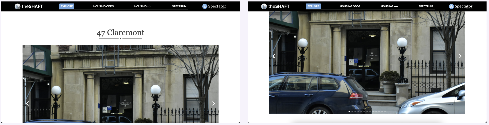
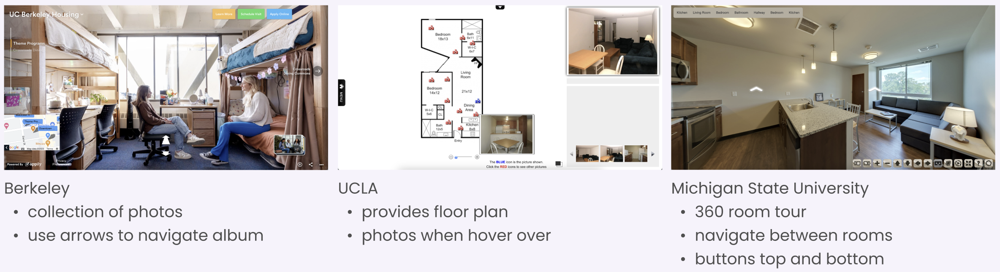
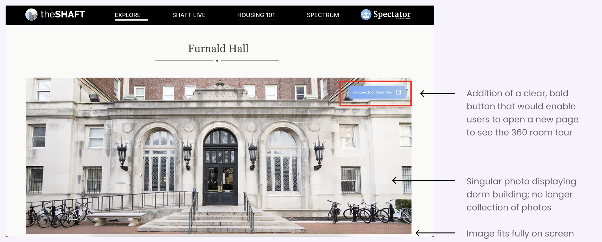
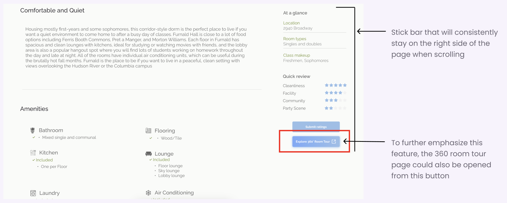
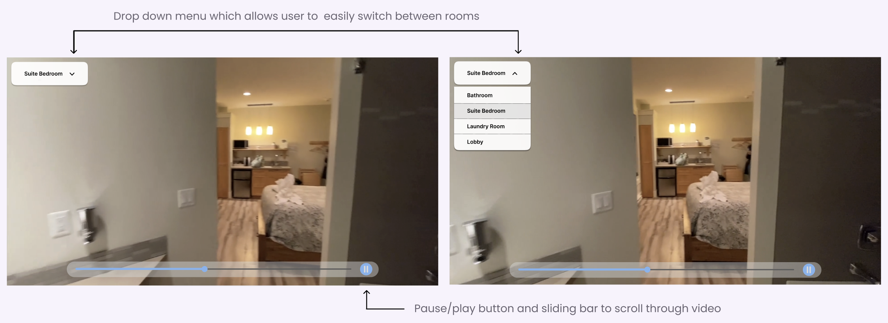

theShaft Feature Design
In this project, our team is dedicated to redesign the individual dorm pages for the Shaft. The purpose of this website is to assist students in gaining a comprehensive understanding of the campus housing options at Columbia University. Our primary objective is to integrate a 360 room tour feature that would offer immersive and comprehensive viewing of the campus dorms, providing students with invaluable information to make informed housing decisions. Please keep in mind that this project is ongoing.
We wanted to answer this question:
“How might dorm pages give students a well-informed look at each room and help them choose housing that best suits their needs?”
Goals & Constraints
Goals. We wanted to increase the “useful view” rate, so users could tell whether they could judge a room from the page, without slowing page load. We also needed to keep creation costs within a non-profit student-organization budget.
Constraints. Budget was not sufficient for campus-wide 360 capture and hosting. The product had to work inside a legacy template with fixed layout specifics. With volunteer production bandwidth, content also had to stay easy to add and maintain.
Research
The pain point this research addresses is inadequate view of room: students still could not get a clear enough sense of what a dorm looked like from the site, beyond static photos or cramped layouts.

To gain a better understanding of how to approach the redesign, we conducted a comparative analysis of other universities'
dorm websites to explore how they allowed students to view their prospective dorms. Some examples include photos with
panoramic views, real-life floor plans, videos, and interactive room tours.
These were some designs we looked at during the comparative analysis:

After conducting a comprehensive analysis, we presented our findings to randomly sampled Columbia University students through a short interview. This interview enabled us to ascertain the efficacy of our identified features and also to gain valuable insights into the students' interaction patterns with other online platforms, thereby informing our decision-making process regarding feature inclusion and exclusion.The main conclusions are as follows:
- Users prefer simplistic design features that are intuitive; less is more
- Users would rather see their room in a separate, full screen tab if utilizing the 360 room tour or video
- Users prefer if we stick to one type of multimedia
- Managing board decided that although 360 room tour would be most ideal for the students, the current budget does not support it
Design Opportunities
Video Room Tour: Students can play a video of their choice of dorm in a separate, full screen tab to explore
spaces that photos cannot otherwise depict. The full screen tab will have a small drop down menu for users to
choose which room they would like to see.
Layout Resizing: We will re-do some of the layout so that students can now see entire photos or features without having
to scroll. This would help the readability and comprehension of the website.
Mockup Design
As this project has already been worked on in the past, my team and I altered the existing prototype to include a new page with a video room tour as shown in the preliminary prototype. We are still exploring more prototype ideas.


